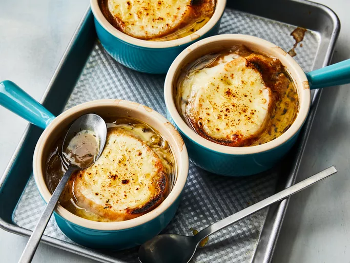

Description
French onion soup, or soupe à l'oignon gratinée, is a classic French dish made with caramelized onions and beef stock or broth.
The soup is topped with bread and cheese, then gratinéed to rich, gooey perfection.
Ingredients
- ½ cup unsalted butter
- 2 tablespoons olive oil
- 4 cups sliced onions
- 5 cups beef broth
- 1 pinch salt and pepper to taste
- 4 slices French bread
- 4 slices provolone cheese
- 2 slices Swiss cheese, diced
Steps
- Thin Slice onions and caramelized to golden brown
- Add broth and seasonings once onions are ready boil and simmer for 30 minutes
- Prepare bread slice thick and toast lightly
- Once soup is done add to bowl top with bread and cheese and broil for 2-3 minutes